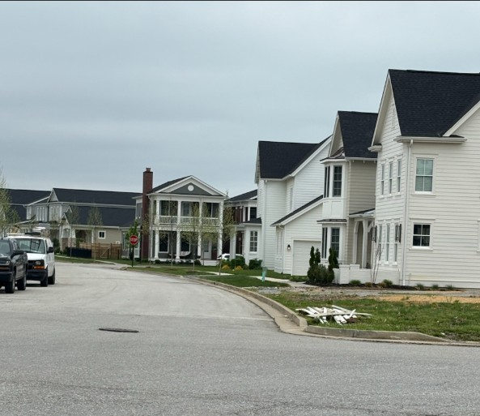

Click the arrows to view the slideshow
Norton Commons was establised in 2004. Construction in the South Village began in 2003. North Village started construction in 2015. This construction was apart of the new urbanism movement and the builders wanted to create a mixed-use neighborhood with restaurants and other services within walking distance. Norton Commons is not just a neighborhood, it is a lifestyle and is very welcoming for families. It is on the more pricey side, but it provides a vast amount of amenities to the residents.
I wanted to show how much development has happened over eleven years in Prospect. I grew up around this and saw the progress from start to finish.
Visualizations created from lidar data provided by KyFromAbove in ArcGIS Pro and Cesium Ion. Additional source of information from Norton Commons website, April, 2025.
This project measures and visualizes the dramatic change in Norton Commons using point clouds in GIS.
Page and visualizations created by Kelsey for GEO 409, Department of Geography, University of Kentucky. Spring 2025.
Land Change from 2001-2019
North Village
Hillshade of Norton Commons
South Village
Street in North Village